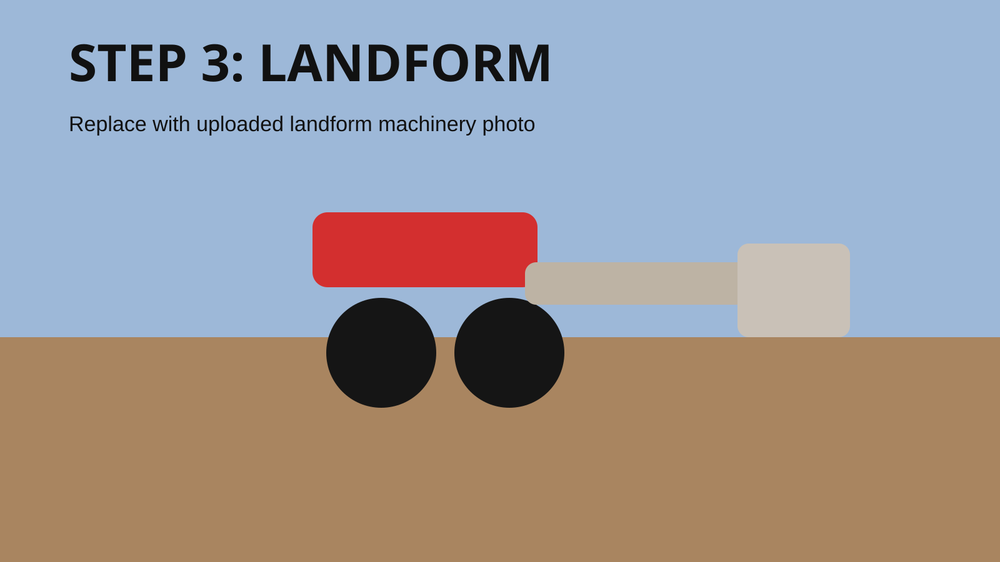

- Uses significantly less soil movement
- Works with natural land shape
- Improves water flow and drainage
- More efficient over large areas
- Reduces unnecessary cost and time

BFT Boerdery Landforming
Precision landforming for working farms.
Get the water moving right and make the field easier to farm.
Uneven land wastes water, time, and yield. We shape fields so water moves more evenly, wet and dry patches are reduced, and the land is easier to manage through the season. We use these systems on our own farm, so we know how they need to work in practice.
RTK GPS guided
Water movement planned
Built by farmers
Landforming uses up to 0% less soil movement than landleveling
Landforming
What is Landforming?
Landforming shapes the field so water can move properly across it. Instead of forcing everything flat, it works with the natural shape of the land to guide water better, move less soil, and improve how the field performs.
Land Leveling
What is Land Leveling?
Land leveling flattens a field to create a more even surface for irrigation. It removes high and low spots so water can spread more evenly, but it usually means moving more soil and taking out some of the land’s natural shape.
Comparison
Landforming vs Land Leveling
- Requires heavy soil movement
- Flattens natural land structure
- Can increase water runoff in some cases
- Higher fuel and time requirements
If you want better water movement with less disturbance to the land, landforming is often the better fit.
What We Do
We shape fields so water works for you, not against you.
We use RTK GPS landforming and land leveling to help farmers get more even water movement across the field. When the land is shaped properly, irrigation becomes easier to manage and the whole hectare works more evenly.
That means fewer wet spots, fewer dry spots, less wasted water, and a field that is easier to plant, irrigate, and manage through the season.
Field Problems
Choose what you see in the field.
Select the problem that looks closest to your land and we will show the usual cause, the best next step, and which BFT service normally fits.
Likely fit: Landforming
Standing water after rain or irrigation
Low spots or poor fall can hold water too long. A GPS survey shows where the water is trapped and a landforming design can guide it away with less unnecessary soil movement.
Ask About This ProblemPotential Gains
See where better field shape can save effort.
This is not a promised yield or quote. It is a simple planning tool to show how improved water movement can reduce repeat work, wasted irrigation, and problem areas.
Field Performance
Real field numbers. Practical output.

RTK GPS Accuracy
±2cm
Keeps levels close so water moves more evenly across the field.

Hourly Output
60m³/hr
Strong soil movement helps jobs keep moving across bigger areas.

Soil Per Pass
3.5–4m³
Consistent soil carry helps give the field a steadier, cleaner finish.

Average Cut of Soil
5–10cm
A practical average cut across the field for controlled shaping and flow.

Daily Coverage
4–6ha/day
Reliable daily progress for larger commercial landforming work.
Why It Matters
Better land shape helps the whole farm work better.
Protect Your Soil
Less compaction helps protect soil structure and keeps the field easier to work after irrigation or rain.
More Even Water Flow
When the field is shaped properly, water spreads more evenly so you get fewer wet and dry patches.
Lower Running Costs
Less wasted movement, less repeat work, and better water use can help bring day-to-day farming costs down.
More Productive Fields
More even watering helps crops come up more evenly and keeps the field performing more consistently.
Performance
Proven Work in the Field
Landforming Hours
Total machine hours completed
Hectares Landformed
Total area shaped and completed
Hectares Surveyed & Designed
Measured, planned, and prepared for execution
About Us
Built from Real Farming Experience
We farm ourselves in the Cedarville Flats. Our story started in the 1960s when William Botha established the farm, and over the years we have built a mixed farming operation with sheep, cattle, maize, soybeans, and pastures.
Since 2020, we have used landforming on our own farm and tested it in real conditions. We have seen what works, what does not, and where the details matter.
That means we are not coming in with theory only. We work from practical farming experience, and every job starts with understanding your land, your water, and what needs to work on your farm.
In the Field
Real machines. Real land. Real results.
Photos
Field Photo Gallery
Real photos from working fields, machinery, and finished results.
Videos
See it in action
Watch the machinery working in the field and see how the system performs.
Start by understanding the field